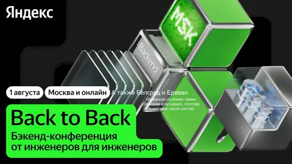

Кажется, мы стали забывать, что такое настоящая инженерная работа.
• Что меняется в стандарте С++ - почему это важно, если код за нас пишет ИИ?
• Зачем поддержка LuaJIT в ePBF-профилировщике Perforator, если можно спросить у LLM?
• Как использовать статическую рефлексию С++26 для генерации, если вы не знаете, на каком языке клод пишет ваш сервис?
• Что такое механизм отмены для С++20-корутин и каким промтом его накастовать?
• Что вы должны знать про ABI, если курс конструирования компилляторов вы проходили 17 лет назад?
Про все это и многое другое вы можете узнать на конференции Back to Back 1 августа в Москве, Белграде, Ереване и онлайн. Все подробности и регистрация тут - https://backtobackconf.ru
P.S. С удивлением нашел на сайте много знакомых лиц в разделе программного комитета. Очень крутые ребята, уверен - и конфа будет под стать.
